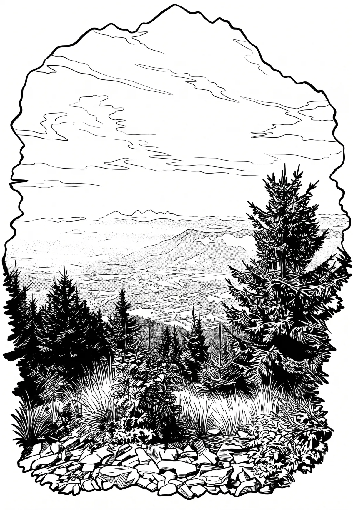

Smrk
Moravskoslezský kraj · 1276 m n. m.

přírodní památka · #072
Smrk (také Velký Smrk; německy Smrk-Berg) je po Lysé hoře druhou nejvyšší horou Moravskoslezských Beskyd. Leží mezi obcemi Ostravice a Čeladná, ze kterých je vrchol Smrku přístupný po značených turistických cestách. V jeho masívu najdeme i několik menších vrcholů: Malý Smrk (1174 m – v podstatě druhý vrchol, 1 km VSV od hlavního vrcholu), Smrček a Malý Smrček.